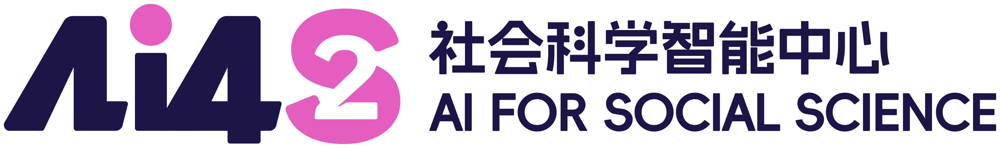

Institutional Intelligence
AI competition is increasingly about governance capacity, incentive design, and the ability to reason about institutions.

社会科学智能中心 AI for Social Science
From perceptual intelligence to social intelligence for real-world complex systems.
Building AI systems for governance, markets, education, healthcare, culture, and public-good applications.
About
AI4S2 addresses a core gap in current AI research: technical optimization often advances faster than social context, institutional design, and cultural adaptation. The center develops a multidimensional social intelligence framework that integrates value alignment, social embedding, and cultural cognition.
Located within the Shenzhen Loop Area Institute ecosystem, AI4S2 connects artificial intelligence, economics and finance, computational social science, public governance, education, healthcare, and cultural cognition.
Why Social Science Intelligence
AI competition is increasingly about governance capacity, incentive design, and the ability to reason about institutions.
Markets, schools, hospitals, platforms, and cities are interactive systems made of people, organizations, rules, and AI agents.
Generative modeling and multi-agent simulation make it possible to test policies and strategies in a digital social sandbox.
Research Framework
Normative ethics and AI moral decision-making frameworks for responsible, accountable social systems.
Digital representation of social systems, digital governance simulation, multi-scale modeling, and social sensing.
Cultural semantic representation, adaptation mechanisms, and diffusion modeling for global engagement.
SLAI Ecosystem
Shenzhen Loop Area Institute organizes five core research centers around frontier AI and real-world applications. AI4S2 contributes the social simulation and think-tank layer: large models, multi-agent societies, visual analytics, policy evaluation, and human-centered governance.
The center is designed to serve high-stakes scenarios where decisions must be tested, calibrated, and explained before they are deployed.

Research Directions
Multi-agent modeling and computational simulation for markets, institutions, cities, and communities.
Long-term consistency between AI goals, human values, social norms, and risk management.
Cross-disciplinary, multimodal social science databases and intelligent data acquisition ecosystems.
Generative models that search policy and strategy spaces toward social and economic objectives.
Behavior, coordination, institutional impact, and governance in mixed human-agent societies.
AI for research paradigms, teaching modes, social services, and inclusive public-good applications.
Blog
Field notes, interviews, and essays that connect social intelligence, economic world models, and real-world deployment.


At NTU's launch of the Global Institute of Finance, Technology, and Society (GIFTS), AI4S2 Center Director Lin William Cong opened a broader research agenda for understanding how AI, markets, institutions, and society shape one another. As the founding director of GIFTS, Cong framed technology as a social force whose impact depends on human values, incentives, governance, and public purpose.
AI4S2 Co-Director Ye Luo extends this agenda from the social-science side: econometrics, AI agents, and expert-level research systems give the center a way to test economic and institutional questions before they become real-world interventions. Together, Cong and Luo position AI4S2 as a bridge between computational social science, financial technology, and policy-facing AI.

In a Freedom AI interview from the SLAI Open Day, Wang Benyou outlines an AI4S2 agenda for modeling belief-driven social systems, building closed-loop deployment pathways, and treating language as the organizing medium for embodied, scientific, and social intelligence.
Academic Community
AI4S2 organizes seminars and workshops on humans, machines, distributed networks, economic world models, agentic intelligence, privacy, and AI for econometrics.
Winter Institute on Humans, Machines, and Distributed Networks
CCF at SLAI: Agentic Intelligence for Human-AI Society
AI for Social Science and Economic World Models
Connect
AI4S2 welcomes students, research assistants, engineers, faculty collaborators, industry partners, and public-sector collaborators interested in AI for social science and digital social simulation.
AI4S2 is the Social Science Intelligence Center within the Shenzhen Loop Area Institute ecosystem, advancing the institute's "FROM 1 TO INFINITY" vision through governance, markets, education, healthcare, culture, and public-good AI.